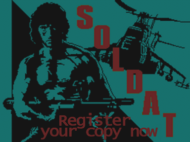
To enjoy the registered version of Soldat NOW go to this section.
If you are not convinced yet take a look at the benefits of registering below.
Soldat is free to play but you should consider registering it if you enjoy it.
Registering is the right thing to do, it makes the game live because the author gets motivated and he has funds to carry on.
The cost is only US $13.99. So think about it if you like Soldat.
Except the feeling that you're doing good and becoming a registered member of the great Soldat community,
YOU GET MORE benefits, here they are:
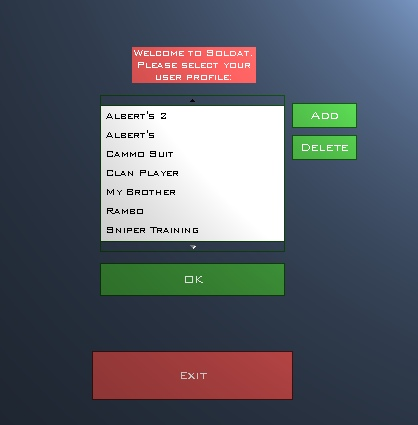
Gives you the ability to save custom settings in as many as you want profiles.
Different profiles let you instantly access different premade settings such as: game options, setup options, server settings, player names and visuals.
Makes changing options a whole lot easier. The above sceenshot shows the idea.
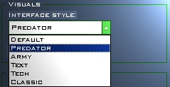
You can change the look, position and behaviour of the in-game interface.
If you're bored with the standard Soldat interface you can easily change it.
Currently in Soldat there are available the below interfaces.
If it's not enough you can easily download tons of interfaces made by users or create your own with the Soldat Interface Maker.
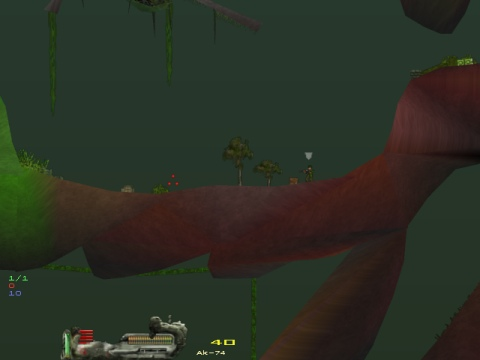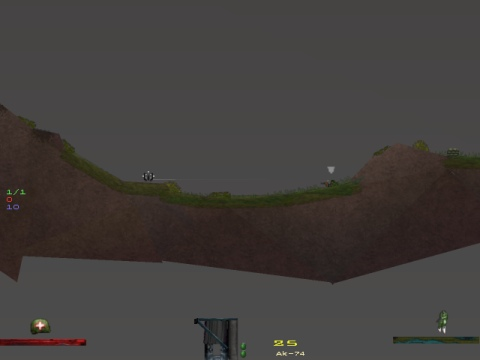
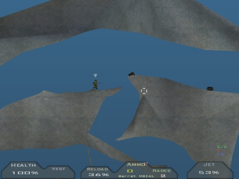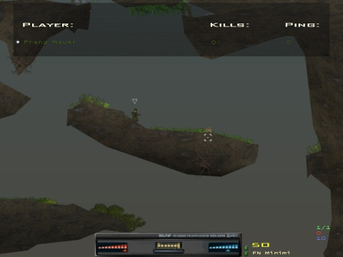
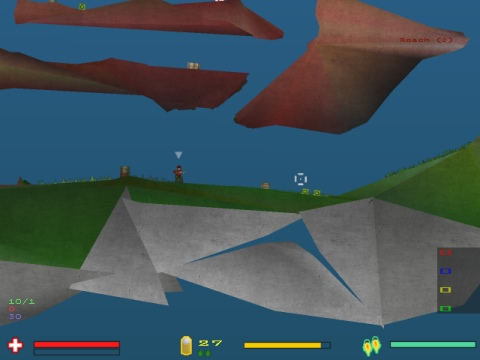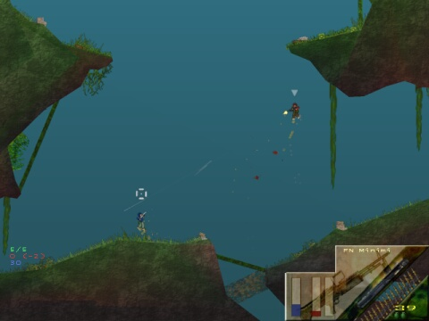
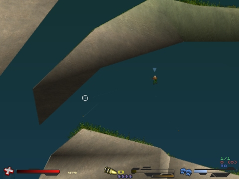
Want to know how much kills you get with your favorite weapon? Press [F2] and display full stats.
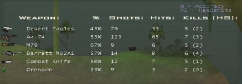
After registering you will have a fully playable version of Soldat with no unnecessary nag screens and texts. No banner splash screen on start.
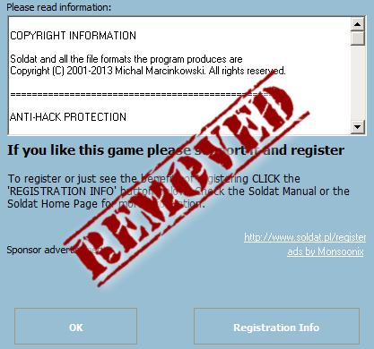
Imagine showing that you support the game. As soon as you register there will be a special symbol (bright yellow star) next to your name on the scoreboard whenever you play Soldat.
Thanks to this you will be an honored member of the Soldat community and everyone will know it.
Thanks to this star everyone will recognize you. No unregistered noobs using your nickname!
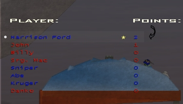
Only registered users have the possibility to have unique jet flames color. If you don't want to have the same yellow flame coming out of your boots register now! With this you will be always recognized and nobody will make a mistake that this is you. Only registered players can have this.
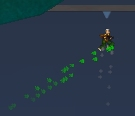 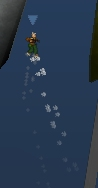 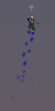
With the Interface Maker you will have the ability to modify the current interfaces.
If you don't like the positions of the weapon and health stats you can easily move them and suit your needs.
Draw your own interface! It can't be easier with the Interface Maker.
If you don't want to make everything you can change some of the default interfaces.
Also you can just make custom interfaces that only change your aim cursor!
You can make or download dozens of unique cursors for you to use.
Because there are so many happy players that have already registered I have decided to give a 30-day money-back guarantee! It will be enough if you contact me and say that you want a refund and tell me why so I can improve whatever went wrong. So there is no risk in buying the Soldat registration. Join all the other happy players NOW!
So think about it.
Soldat is free to play but it needs your support, you can feel good about it, plus you will get a full package of new options to play around with!
Just check these links below and select the one you prefer:
Registering costs 13.99$.
All currencies are accepted (including EU). All payments are secure.
Refunds available. 30 day money-back guarantee!
Click here to go to the Soldat registration page and
get your full version in a few minutes:
Registration is for lifetime (all future versions!)
After registering you will receive a code and program that will allow you to instantly enjoy the full version of Soldat.
You will recieve the registration just in minutes after the payment is processed and you can have fun with the full version of Soldat right away!
If you have ANY problems or questions e-mail us personally here support@thd.vg
Thank you and have fun!
Michal Marcinkowski